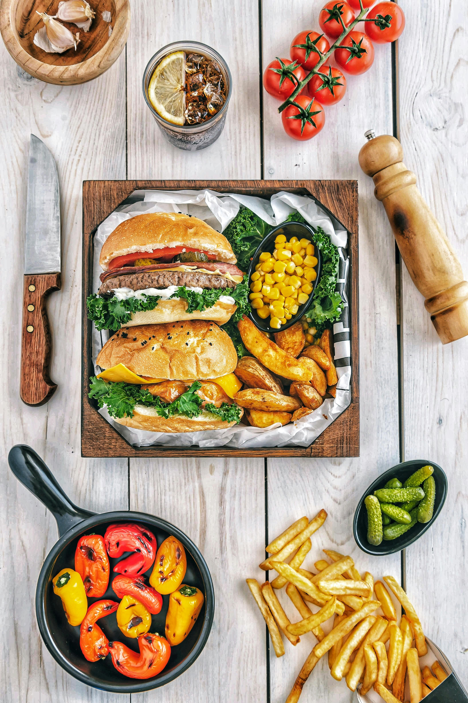
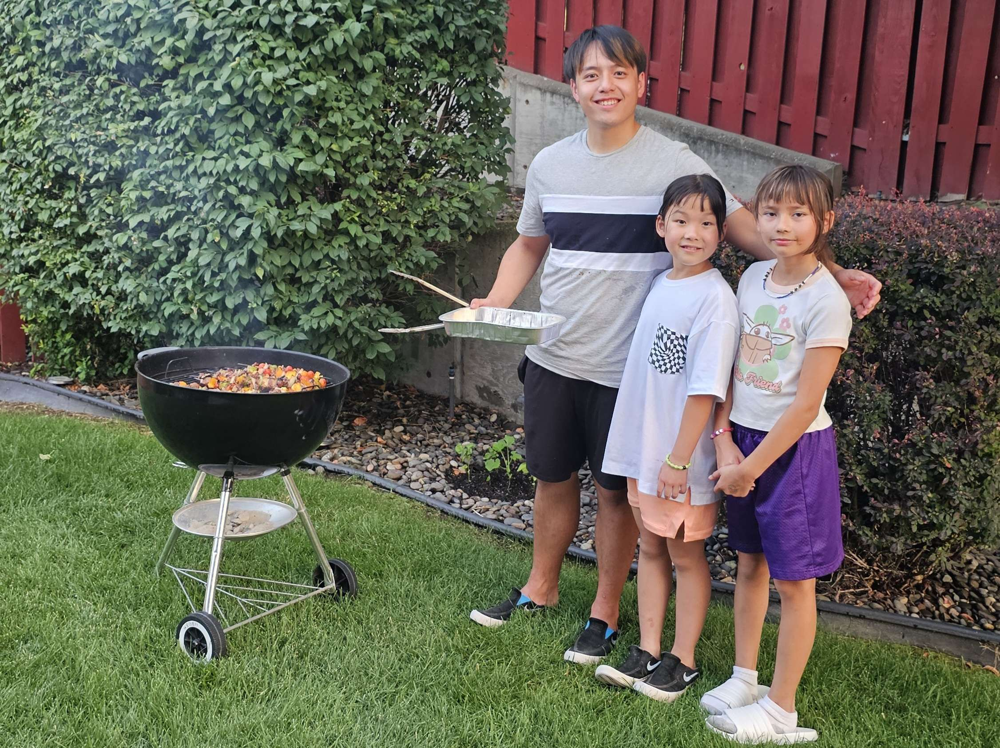
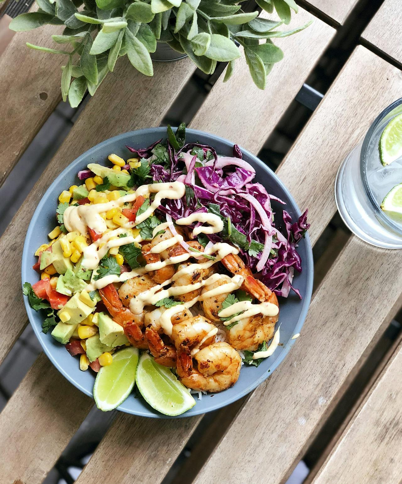
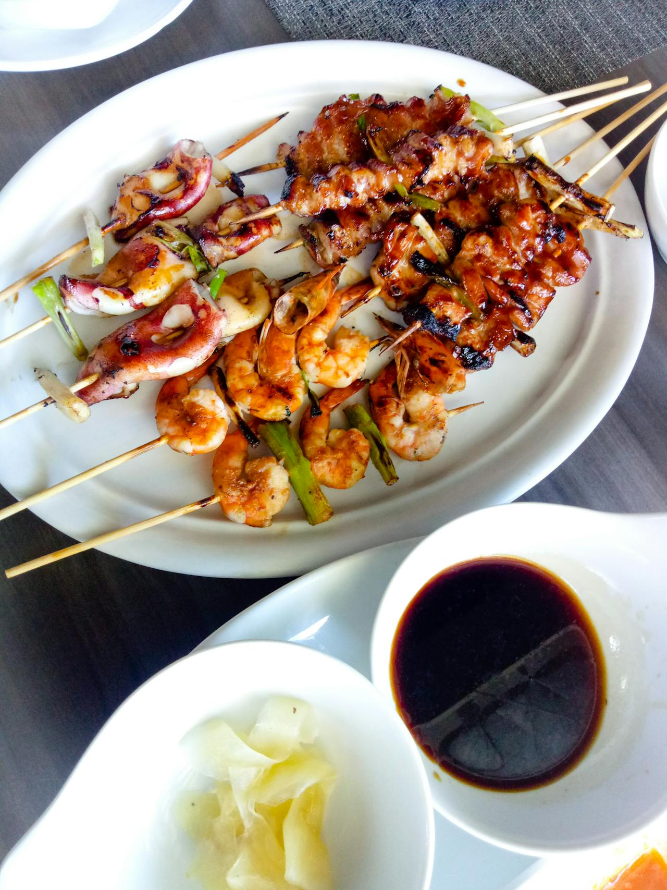
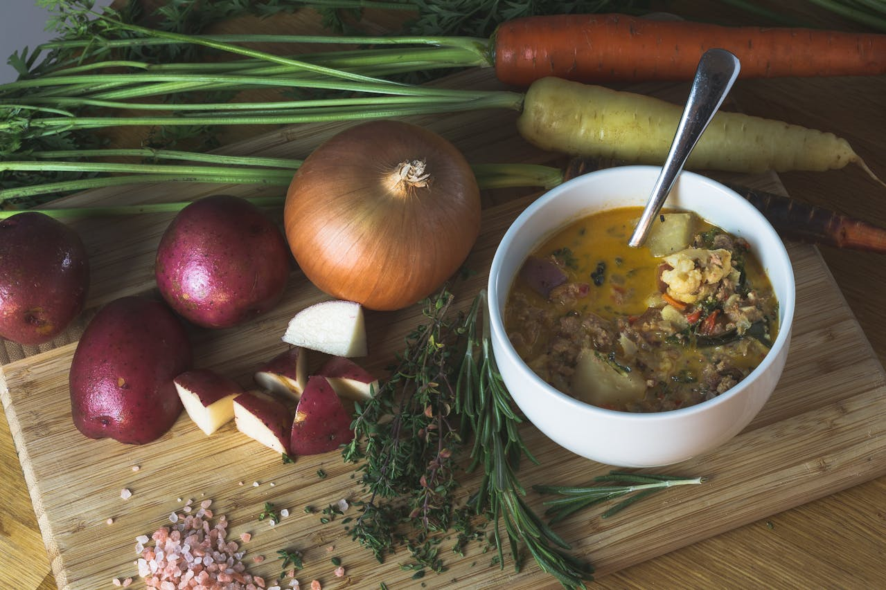
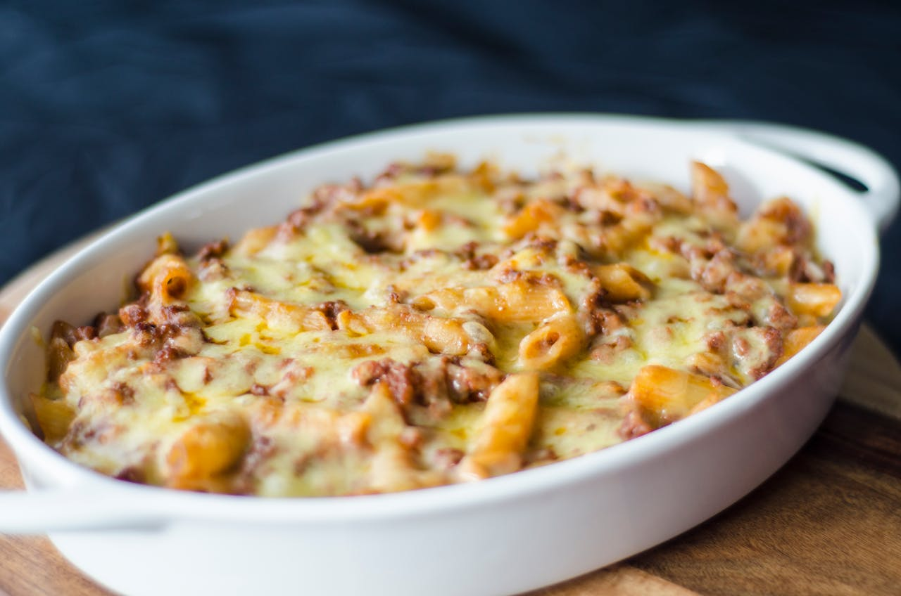
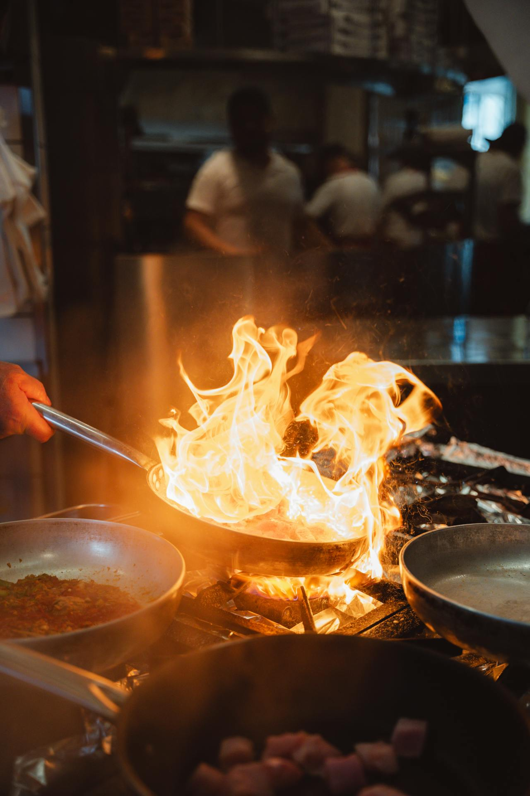
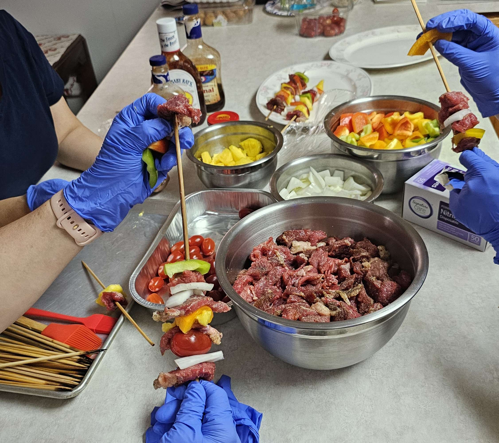

Home

Welcome to my cooking site, where I share my passion for delicious food!
Join me on a culinary journey filled with flavors and creativity.
About Me

Cooking is not just a hobby; it's a way of expressing myself through flavors and ingredients.
I have been eating my whole life. Unlike others, I treat food as a process of enjoyment, so I am not picky eaters and I do not dislike certain foods unless they are disgusting or unappetizing. Over time, as I grew older, I didn't just eat food anymore. I started trying to cook food, which opened the door to a new world for me. It made me realize that cooking is just as beautiful as tasting food.
Best Times
Discover the best times of year for cooking different types of meals.
Light and fresh meals to celebrate the season.

Perfect dishes for outdoor gatherings.

Warm, comforting meals as the weather cools.

Indulgent meals to enjoy on cold days.

Best Locations to Cook
Explore ideal locations that bring out the best in different cooking styles and flavors.
- Backyard BBQ: Fire up the grill and enjoy cooking outdoors with friends, perfect for steaks, burgers, and veggie skewers.
- Beach Picnic: Plan a seaside feast with cold salads, fresh fruits, and easy-to-eat wraps or seafood for a refreshing, scenic meal.
- Mountain Cabin: Ideal for hearty soups, stews, and roasted dishes, a mountain cabin provides a cozy, rustic backdrop for comfort foods.
- Indoor Kitchen: Your home kitchen is the ultimate space to experiment with new recipes, techniques, and ingredients.
Cooking Techniques

Learn essential cooking techniques to enhance your skills.
- Chopping and Slicing
- Knife skills
- Different cutting techniques
- Cooking Methods
- Boiling
- Sautéing
- Baking
- Cakes
- Pastries
Why Cooking?

Cooking is more than just a way to prepare food—it's an art, a science, and a deeply satisfying activity. Here are a few reasons why cooking is such a meaningful pursuit:
- Creativity and Expression: Cooking lets you experiment with flavors, colors, and textures. It’s a way to express your personality, creativity, and even your cultural heritage through the dishes you make.
- Health and Wellness: Home-cooked meals allow you to control ingredients and make healthier choices. Cooking is a powerful tool to nourish not just your body, but also your mental well-being.
- Connection and Sharing: Cooking is often about sharing—a meal prepared with love brings people together, whether with family, friends, or even strangers. Cooking helps build and strengthen relationships.
- Learning and Growth: Cooking is a lifelong learning journey. Whether you're mastering a new technique or exploring a new cuisine, there’s always something new to discover.
- Satisfaction and Confidence: Completing a dish from scratch brings a sense of accomplishment. The satisfaction of creating something delicious boosts confidence and brings joy.
AI Prompts
Below are the AI prompts I used to generate the content for this page:
- for Best Times: Please tell me what foods are suitable for different seasons
- for Best Locations to Cook: Provide some dishes suitable for cooking in different locations.
- for Cooking Techniques: Tell me some common cooking techniques
- for Why Cooking: Can you help me summarize the key points of this paragraph:"Cooking is not just about preparing food; This is a way to express oneself and showcase creativity. It allows you to choose healthier ingredients for your diet, benefiting both your body and mind. Cooking brings people together, whether they are family or friends, to establish connections through sharing food. This is also a continuous learning experience where you can discover new recipes and improve your skills. Finally, starting a dish from scratch will give you a sense of achievement, boost your confidence, and make cooking a beneficial activity."
- ask the syntax for style: How to control project width and spacing, what is the specific syntax, is it "flex: 1 1 calc()"?
- ask for JavaScript function: How to use JavaScript that, when a user clicks on a link on a navigation page, only displays the "best position" portion of the page and hides the rest so that the user cannot scroll through it.